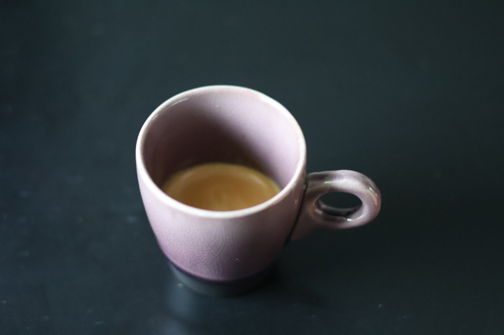

What Is Espresso?
Espresso is coffee made by forcing hot water through tightly packed, finely-ground beans using pressure. Unlike drip coffee where water flows slowly through grounds, espresso pushes water through quickly at 9 bars. The result is a small, concentrated shot (~25-60ml) much stronger than standard brewing. It has a rich, full taste topped with crema—that golden foam indicating a well-pulled shot.
